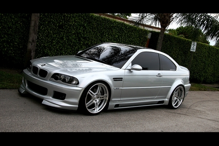
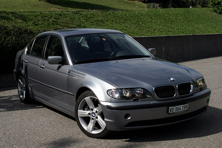
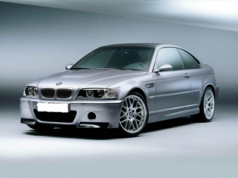

La serie 3

La BMW série 3 est une gamme de voitures berlines et coupés conçus par le constructeur allemand BMW.
Cette série prend la succession en mai 1975 de la BMW 2002, reprenant la plupart de ses caractéristiques,
tout en lui ajoutant de nombreuses évolutions, notamment au niveau des moteurs.
La série 3 était autrefois le plus petit modèle fabriquée par BMW, avant que la place soit prise par la Série 1 en 2004.
C'est également le modèle le plus vendu au monde en 2005 dans la catégorie des voitures de luxe de milieu de gamme,
comptant ainsi pour près de 40 % des ventes du constructeur germanique
La E46 !

Présentée en 1997, la Série 3 E46 est commercialisée en 1998.
Elle reprend de nouveaux moteurs M52TU de même puissance que sur E36 auxquelles s'ajoutent les nouvelles : 2,0 l diesel (136 ch) et 2,9 l diesel (183 ch).
Pour des raisons fiscales, le 2.0 l diesel est rapidement ramené à 130ch. Viennent ensuite les versions break (touring), coupé et cabriolet.
En 2000, trois nouveaux moteur essence 6 cylindres 2,2 l (170 ch), 2,5 l (192 ch) et 3 l (231 ch).
Fin 2001, les versions berlines et break sont restylées.
Les motorisations évoluent aussi : la 318i reçoit un 2,0 l (143 ch), le 2,0 l diesel est proposé avec une puissance de 150 ch sur la 320d,
et de 115 ch sur la toute nouvelle 318d. La version compact fait son apparition.

En 2003, la 316i reçoit un 1,8 de 115 ch à la place du 1,9 l. Les versions coupé et cabriolet sont à leurs tours restylées.
Le coupé peut, pour la première fois, être équipé d'un moteur diesel 3 l de 204 ch. Le moteur 3 l diesel de la berline et du break passe de 183 ch à 204 ch.
Un second moteur diesel est proposé sur le coupé, le 2 l (150 ch) en 2004.
En 2005, c'est au tour du cabriolet d'adopter des motorisations diesel.
{kind=link}